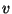
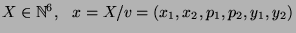
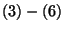

Modèle avec deux répresseurs et deux promoteurs. Chaque promoteur est inhibé par le répresseur transcrit par le promoteur opposé.
Système de réactions
Modèle déterministe
Nous décrivons encore l'évolution du système par une suite de processus de Markov de sauts indéxée par . Soient
Soient .
Les paramétres infinitésimaux sont donnés par:
Les réactions  sont rapides, aussi bien dans un sens que dans l'autre : séparation d'echelle de temps. Pour des temps longs, on peut supposer:
Ce qui permet d'écrire:
On a alors:
En notant:
on a le système d'équations différentielles: